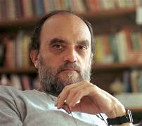

Lionel Messi

Lionel Andrés Messi Cuccittini (Rosario, 24 de junio de 1987), conocido como Leo Messi, es un futbolista argentino que juega como delantero o centrocampista. Desde 2023, integra el plantel del Inter Miami de la MLS estadounidense. Es también internacional con la selección de Argentina, de la que es capitán.
Ernesto Guevara
Ernesto Guevara (Rosario, Argentina; 14 de junio de 19281-La Higuera, Bolivia; 9 de octubre de 1967), conocido como el Che Guevara o simplemente el Che, fue un médico, político, guerrillero, escritor, periodista y revolucionario comunista argentino nacionalizado cubano en 1960, ciudadanía a la que renunció en 1965.
Luciana Aymar
Luciana Paula Aymar (Rosario, 10 de agosto de 1977) es una exjugadora argentina de hockey sobre césped. Declarada por la FIH «Leyenda del Hockey»,1 fue elegida «Mejor Jugadora del Mundo» en ocho ocasiones (2001, 2004, 2005, cuatro consecutivas de 2007 a 2010 y 2013).2
Alberto OLmedo
Alberto Orlando Olmedo, apodado el Negro (Rosario, Santa Fe, 24 de agosto de 1933-Mar del Plata, Buenos Aires, 5 de marzo de 1988), fue un actor y humorista argentino, considerado popularmente como uno de los capocómicos más importantes en la historia del espectáculo de su país, por su destacada labor en televisión, cine y teatro.
Angel DiMaria
Ángel Fabián Di María (Rosario, 14 de febrero de 1988) es un futbolista argentino que juega como delantero en el S. L. Benfica de la Primeira Liga. Es considerado como uno de los mejores jugadores de su generación y uno de los mejores futbolistas argentinos de todos los tiempos.4
Roberto Fontanarrosa
Roberto Alfredo «el Negro» Fontanarrosa (Rosario, 26 de noviembre de 1944-ibídem, 19 de julio de 2007) fue un humorista gráfico, dibujante, guionista, historietista y escritor argentino. Fue uno de los artistas y humoristas más destacados del noveno arte en su país, y también es considerado como un destacado escritor de ficción en general (y del cuento corto en particular).
Amalia Figueredo

Amalia Celia Figueredo de Pietra (Rosario, 18 de febrero de 1895-Buenos Aires, 8 de octubre de 1985) fue una aviadora argentina, la primera mujer en pilotar un avión en Sudamérica en 1914 y una de las pioneras de la aviación mundial.